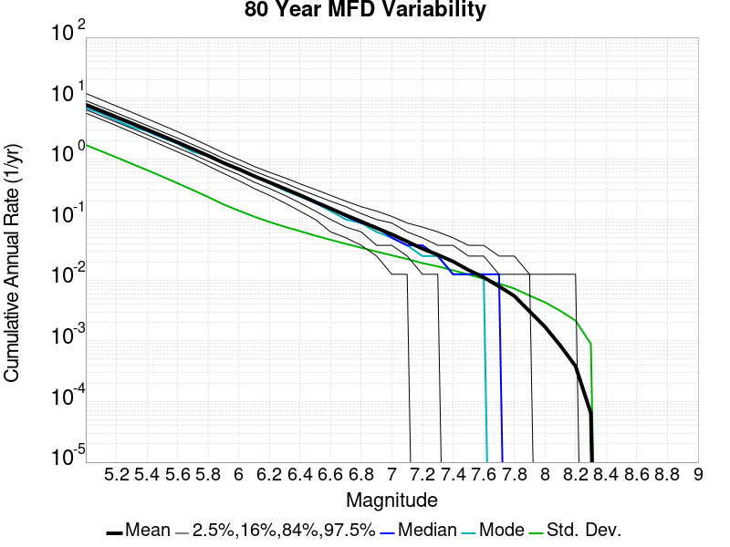
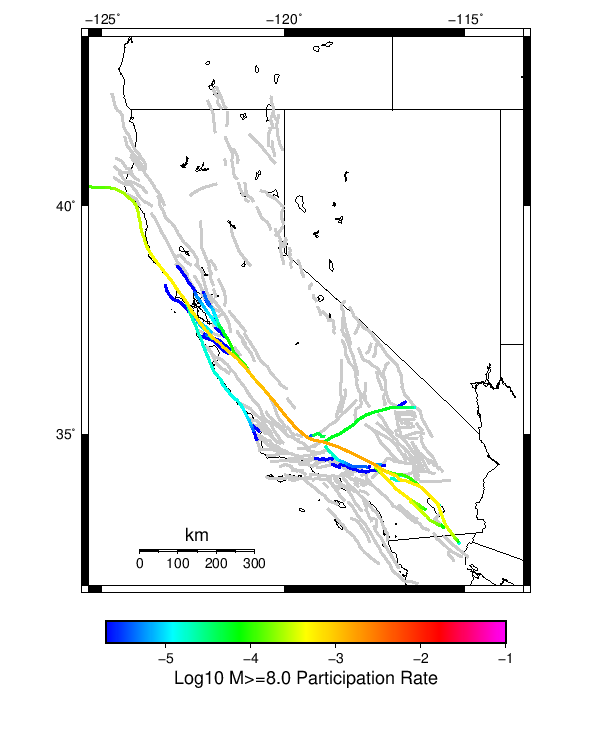
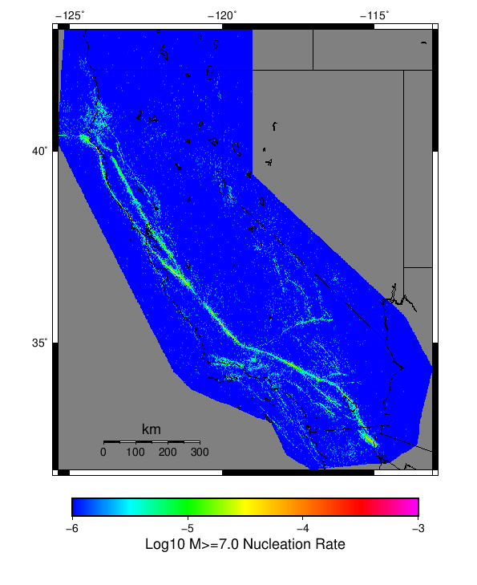

Start 2012, 500 yr, Spontaneous, Historical Catalog, AleatoryKTest Results
| Start 2012, 500 yr, Spontaneous, Historical Catalog, AleatoryKTest |
|---|
| Num Simulations | 177 (incomplete) |
| Start Time | 2012/01/01 00:00:00 UTC |
| Start Time Epoch Milliseconds | 1325376000000 |
| Duration | 500 Years |
| Includes Spontaneous? | true |
| Trigger Ruptures | (none) |
| Historical Ruptures | 60366 Trigger Ruptures |
| First: M7.3 at 1852/01/05 04:40:39 UTC |
| Last: M3.2 at 2011/12/31 19:14:44 UTC |
| Largest: M7.9 at 1857/01/09 16:25:39 UTC |
| Config Generated With | u3etas_config_builder.sh --start-year 2012 --num-simulations 1000 --duration-years 500 --include-spontaneous --historical-catalog --name-add AleatoryKTest --hpc-site USC_HPC --nodes 18 --hours 24 --queue scec |
Table Of Contents
Magnitude Frequency Distribution
(top)
Legend
- Mean (thick black line): mean annual rate across all 177 catalogs
- 2.5%,97.5% (thin black lines): annual rate percentiles across all 177 catalogs
- Median (thin blue line): median annual rate across all 177 catalogs
- Mode (thin cyan line): modal annual rate across all 177 catalogs (scaled to annualized value)
- 500 yr Probability (thin red line): 500 year probability calculated as the fraction of catalogs with at least 1 occurrence
- 500 yr Supraseismogenic Probability (thin dashed red line): same as above, but only for supraseismogenic ruptures on explicitly modeled UCERF3 faults
- 95% Conf (light red shaded region): binomial 95% confidence bounds on probability

| Mag | Mean | 2.5 %ile | 97.5 %ile | Median | Mode | 500 yr Probability | 500 yr Supra-Seis Prob |
|---|
| M≥5 | 7.811 | 6.828 | 9.304 | 7.752 | 7.172 | 1.000 (100.00%) | 1.000 (100.00%) |
| M≥5.1 | 6.179 | 5.434 | 7.408 | 6.146 | 6.166 | 1.000 (100.00%) | 1.000 (100.00%) |
| M≥5.2 | 4.885 | 4.234 | 5.868 | 4.860 | 4.860 | 1.000 (100.00%) | 1.000 (100.00%) |
| M≥5.3 | 3.857 | 3.364 | 4.594 | 3.834 | 3.916 | 1.000 (100.00%) | 1.000 (100.00%) |
| M≥5.4 | 3.036 | 2.650 | 3.626 | 3.012 | 3.100 | 1.000 (100.00%) | 1.000 (100.00%) |
| M≥5.5 | 2.386 | 2.088 | 2.842 | 2.368 | 2.368 | 1.000 (100.00%) | 1.000 (100.00%) |
| M≥5.6 | 1.872 | 1.634 | 2.218 | 1.854 | 1.888 | 1.000 (100.00%) | 1.000 (100.00%) |
| M≥5.7 | 1.459 | 1.272 | 1.716 | 1.452 | 1.432 | 1.000 (100.00%) | 1.000 (100.00%) |
| M≥5.8 | 1.134 | 0.972 | 1.334 | 1.132 | 1.086 | 1.000 (100.00%) | 1.000 (100.00%) |
| M≥5.9 | 0.862 | 0.752 | 1.014 | 0.856 | 0.870 | 1.000 (100.00%) | 1.000 (100.00%) |
| M≥6 | 0.681 | 0.588 | 0.788 | 0.678 | 0.674 | 1.000 (100.00%) | 1.000 (100.00%) |
| M≥6.1 | 0.523 | 0.448 | 0.602 | 0.522 | 0.538 | 1.000 (100.00%) | 1.000 (100.00%) |
| M≥6.2 | 0.414 | 0.350 | 0.488 | 0.410 | 0.410 | 1.000 (100.00%) | 1.000 (100.00%) |
| M≥6.3 | 0.326 | 0.274 | 0.380 | 0.324 | 0.324 | 1.000 (100.00%) | 1.000 (100.00%) |
| M≥6.4 | 0.255 | 0.214 | 0.304 | 0.254 | 0.248 | 1.000 (100.00%) | 1.000 (100.00%) |
| M≥6.5 | 0.196 | 0.162 | 0.236 | 0.196 | 0.214 | 1.000 (100.00%) | 1.000 (100.00%) |
| M≥6.6 | 0.152 | 0.122 | 0.184 | 0.154 | 0.154 | 1.000 (100.00%) | 1.000 (100.00%) |
| M≥6.7 | 0.118 | 0.094 | 0.146 | 0.118 | 0.118 | 1.000 (100.00%) | 1.000 (100.00%) |
| M≥6.8 | 0.093 | 0.070 | 0.116 | 0.092 | 0.098 | 1.000 (100.00%) | 1.000 (100.00%) |
| M≥6.9 | 0.073 | 0.054 | 0.094 | 0.074 | 0.076 | 1.000 (100.00%) | 1.000 (100.00%) |
| M≥7 | 0.057 | 0.040 | 0.072 | 0.058 | 0.056 | 1.000 (100.00%) | 1.000 (100.00%) |
| M≥7.1 | 0.044 | 0.032 | 0.058 | 0.044 | 0.044 | 1.000 (100.00%) | 1.000 (100.00%) |
| M≥7.2 | 0.033 | 0.022 | 0.044 | 0.032 | 0.032 | 1.000 (100.00%) | 1.000 (100.00%) |
| M≥7.3 | 0.026 | 0.014 | 0.038 | 0.026 | 0.026 | 1.000 (100.00%) | 1.000 (100.00%) |
| M≥7.4 | 0.020 | 0.012 | 0.030 | 0.020 | 0.020 | 1.000 (100.00%) | 1.000 (100.00%) |
| M≥7.5 | 0.015 | 8.00E-3 | 0.024 | 0.014 | 0.014 | 1.000 (100.00%) | 1.000 (100.00%) |
| M≥7.6 | 0.011 | 4.00E-3 | 0.018 | 0.012 | 0.012 | 1.000 (100.00%) | 1.000 (100.00%) |
| M≥7.7 | 7.74E-3 | 4.00E-3 | 0.012 | 8.00E-3 | 6.00E-3 | 1.000 (100.00%) | 1.000 (100.00%) |
| M≥7.8 | 5.18E-3 | 2.00E-3 | 8.00E-3 | 6.00E-3 | 4.00E-3 | 0.989 (98.87%) | 0.989 (98.87%) |
| M≥7.9 | 2.86E-3 | 0.000 | 6.00E-3 | 2.00E-3 | 2.00E-3 | 0.904 (90.40%) | 0.904 (90.40%) |
| M≥8 | 1.67E-3 | 0.000 | 4.00E-3 | 2.00E-3 | 2.00E-3 | 0.655 (65.54%) | 0.655 (65.54%) |
| M≥8.1 | 8.81E-4 | 0.000 | 4.00E-3 | 0.000 | 0.000 | 0.401 (40.11%) | 0.401 (40.11%) |
| M≥8.2 | 4.97E-4 | 0.000 | 2.00E-3 | 0.000 | 0.000 | 0.232 (23.16%) | 0.232 (23.16%) |
| M≥8.3 | 1.36E-4 | 0.000 | 2.00E-3 | 0.000 | 0.000 | 0.068 (6.78%) | 0.068 (6.78%) |
| M≥8.4 | 0.000 | 0.000 | 0.000 | 0.000 | 0.000 | 0.000 (0.00%) | 0.000 (0.00%) |
| M≥8.5 | 0.000 | 0.000 | 0.000 | 0.000 | 0.000 | 0.000 (0.00%) | 0.000 (0.00%) |
| M≥8.6 | 0.000 | 0.000 | 0.000 | 0.000 | 0.000 | 0.000 (0.00%) | 0.000 (0.00%) |
| M≥8.7 | 0.000 | 0.000 | 0.000 | 0.000 | 0.000 | 0.000 (0.00%) | 0.000 (0.00%) |
| M≥8.8 | 0.000 | 0.000 | 0.000 | 0.000 | 0.000 | 0.000 (0.00%) | 0.000 (0.00%) |
| M≥8.9 | 0.000 | 0.000 | 0.000 | 0.000 | 0.000 | 0.000 (0.00%) | 0.000 (0.00%) |
| M≥9 | 0.000 | 0.000 | 0.000 | 0.000 | 0.000 | 0.000 (0.00%) | 0.000 (0.00%) |
Long Term Rate Variability
(top)
162 Year Variability
(top)

Download CSV Here
| Magnitude | Mean | Median | Mode | Std. Dev. | 2.5 %-ile | 16 %-ile | 84 %-ile | 97.5 %-ile |
|---|
| 5.0 | 7.8057823 | 7.6728396 | 7.919753 | 1.0774963 | 6.234568 | 6.8271604 | 8.722222 | 10.222222 |
| 5.1 | 6.1746297 | 6.067901 | 5.5 | 0.85064393 | 4.9012346 | 5.376543 | 6.882716 | 8.018518 |
| 5.2 | 4.8822513 | 4.796296 | 4.839506 | 0.67319936 | 3.8703704 | 4.2530866 | 5.4691358 | 6.240741 |
| 5.3 | 3.8554556 | 3.7901235 | 3.6234567 | 0.53313744 | 3.0308642 | 3.3703704 | 4.3024693 | 4.9382715 |
| 5.4 | 3.0351074 | 2.993827 | 3.0555556 | 0.42133546 | 2.3703704 | 2.6358025 | 3.3888888 | 3.925926 |
| 5.5 | 2.3854828 | 2.3395061 | 2.1851852 | 0.3330601 | 1.8518518 | 2.074074 | 2.654321 | 3.0925925 |
| 5.6 | 1.87187 | 1.845679 | 1.8395061 | 0.25954884 | 1.4444444 | 1.6234568 | 2.0864198 | 2.4012346 |
| 5.7 | 1.4590105 | 1.4444444 | 1.3703704 | 0.20323594 | 1.1234568 | 1.2592592 | 1.6481482 | 1.8765432 |
| 5.8 | 1.1332566 | 1.1234568 | 1.1666666 | 0.15734577 | 0.8703704 | 0.9814815 | 1.2654321 | 1.4691358 |
| 5.9 | 0.8619539 | 0.8518519 | 0.8518519 | 0.11947722 | 0.66049385 | 0.7407407 | 0.9691358 | 1.1172839 |
| 6.0 | 0.68147683 | 0.6728395 | 0.63580245 | 0.095783725 | 0.5185185 | 0.58641976 | 0.7777778 | 0.8765432 |
| 6.1 | 0.5236335 | 0.52469134 | 0.4814815 | 0.075433694 | 0.37654322 | 0.44444445 | 0.59876543 | 0.67901236 |
| 6.2 | 0.41384763 | 0.41358024 | 0.41358024 | 0.063187964 | 0.29012346 | 0.35185185 | 0.4814815 | 0.5308642 |
| 6.3 | 0.3258585 | 0.32098764 | 0.3148148 | 0.051361177 | 0.2345679 | 0.27160493 | 0.37654322 | 0.42592594 |
| 6.4 | 0.25556254 | 0.25308642 | 0.25308642 | 0.043237787 | 0.17283951 | 0.21604939 | 0.2962963 | 0.33950618 |
| 6.5 | 0.1963335 | 0.19753087 | 0.20987654 | 0.037804592 | 0.12962963 | 0.16049382 | 0.2345679 | 0.2777778 |
| 6.6 | 0.15268187 | 0.15432099 | 0.14197531 | 0.03212603 | 0.09259259 | 0.11728395 | 0.18518518 | 0.21604939 |
| 6.7 | 0.118016325 | 0.11728395 | 0.09876543 | 0.02778428 | 0.06790123 | 0.09259259 | 0.14814815 | 0.17283951 |
| 6.8 | 0.09312734 | 0.09259259 | 0.086419754 | 0.023473358 | 0.049382716 | 0.074074075 | 0.11728395 | 0.14814815 |
| 6.9 | 0.07345796 | 0.074074075 | 0.06790123 | 0.019996373 | 0.037037037 | 0.055555556 | 0.09259259 | 0.11728395 |
| 7.0 | 0.05742717 | 0.055555556 | 0.055555556 | 0.016886262 | 0.024691358 | 0.037037037 | 0.074074075 | 0.09259259 |
| 7.1 | 0.043895748 | 0.043209877 | 0.043209877 | 0.015201975 | 0.012345679 | 0.030864198 | 0.061728396 | 0.074074075 |
| 7.2 | 0.033189185 | 0.030864198 | 0.024691358 | 0.012799347 | 0.012345679 | 0.018518519 | 0.043209877 | 0.061728396 |
| 7.3 | 0.026051475 | 0.024691358 | 0.018518519 | 0.011091748 | 0.0061728396 | 0.018518519 | 0.037037037 | 0.049382716 |
| 7.4 | 0.020041386 | 0.018518519 | 0.018518519 | 0.009766309 | 0.0061728396 | 0.012345679 | 0.030864198 | 0.037037037 |
| 7.5 | 0.014531166 | 0.012345679 | 0.012345679 | 0.008068199 | 0.0 | 0.0061728396 | 0.024691358 | 0.030864198 |
| 7.6 | 0.011125061 | 0.012345679 | 0.012345679 | 0.0067632683 | 0.0 | 0.0061728396 | 0.018518519 | 0.024691358 |
| 7.7 | 0.007707331 | 0.0061728396 | 0.0061728396 | 0.005515856 | 0.0 | 0.0 | 0.012345679 | 0.018518519 |
| 7.8 | 0.0051265955 | 0.0061728396 | 0.0061728396 | 0.004587672 | 0.0 | 0.0 | 0.012345679 | 0.012345679 |
| 7.9 | 0.0028248588 | 0.0 | 0.0 | 0.0034316224 | 0.0 | 0.0 | 0.0061728396 | 0.0061728396 |
| 8.0 | 0.0016623654 | 0.0 | 0.0 | 0.0028184338 | 0.0 | 0.0 | 0.0061728396 | 0.0061728396 |
| 8.1 | 8.60245E-4 | 0.0 | 0.0 | 0.0021398028 | 0.0 | 0.0 | 0.0 | 0.0061728396 |
| 8.2 | 4.7662226E-4 | 0.0 | 0.0 | 0.0016492624 | 0.0 | 0.0 | 0.0 | 0.0061728396 |
| 8.3 | 1.2787427E-4 | 0.0 | 0.0 | 8.800307E-4 | 0.0 | 0.0 | 0.0 | 0.0 |
| 8.4 | 0.0 | 0.0 | 0.0 | 0.0 | 0.0 | 0.0 | 0.0 | 0.0 |
| 8.5 | 0.0 | 0.0 | 0.0 | 0.0 | 0.0 | 0.0 | 0.0 | 0.0 |
| 8.6 | 0.0 | 0.0 | 0.0 | 0.0 | 0.0 | 0.0 | 0.0 | 0.0 |
| 8.7 | 0.0 | 0.0 | 0.0 | 0.0 | 0.0 | 0.0 | 0.0 | 0.0 |
| 8.8 | 0.0 | 0.0 | 0.0 | 0.0 | 0.0 | 0.0 | 0.0 | 0.0 |
| 8.9 | 0.0 | 0.0 | 0.0 | 0.0 | 0.0 | 0.0 | 0.0 | 0.0 |
| 9.0 | 0.0 | 0.0 | 0.0 | 0.0 | 0.0 | 0.0 | 0.0 | 0.0 |
80 Year Variability
(top)

Download CSV Here
| Magnitude | Mean | Median | Mode | Std. Dev. | 2.5 %-ile | 16 %-ile | 84 %-ile | 97.5 %-ile |
|---|
| 5.0 | 7.8066735 | 7.5375 | 6.5 | 1.5249174 | 5.7125 | 6.5 | 8.9875 | 12.0125 |
| 5.1 | 6.175318 | 5.9625 | 5.55 | 1.2037576 | 4.55 | 5.1125 | 7.125 | 9.5125 |
| 5.2 | 4.8830156 | 4.725 | 4.7 | 0.9508716 | 3.5875 | 4.05 | 5.65 | 7.4375 |
| 5.3 | 3.8559675 | 3.7375 | 3.9 | 0.7557649 | 2.7875 | 3.2 | 4.4625 | 5.85 |
| 5.4 | 3.0356874 | 2.95 | 2.9375 | 0.59551436 | 2.175 | 2.5125 | 3.5 | 4.5625 |
| 5.5 | 2.3860288 | 2.3125 | 2.25 | 0.46958575 | 1.7125 | 1.975 | 2.775 | 3.5875 |
| 5.6 | 1.872234 | 1.8125 | 1.725 | 0.36659506 | 1.3125 | 1.5375 | 2.2 | 2.8 |
| 5.7 | 1.4591337 | 1.425 | 1.375 | 0.28739703 | 1.0125 | 1.2 | 1.725 | 2.15 |
| 5.8 | 1.1334039 | 1.1125 | 1.1125 | 0.22314002 | 0.75 | 0.925 | 1.3375 | 1.65 |
| 5.9 | 0.8622293 | 0.8375 | 0.8375 | 0.1711078 | 0.5875 | 0.7 | 1.025 | 1.275 |
| 6.0 | 0.6814383 | 0.675 | 0.625 | 0.13811034 | 0.45 | 0.55 | 0.8125 | 0.9875 |
| 6.1 | 0.5236464 | 0.5125 | 0.5375 | 0.11019576 | 0.325 | 0.4125 | 0.625 | 0.7625 |
| 6.2 | 0.41366526 | 0.4125 | 0.375 | 0.091481365 | 0.25 | 0.325 | 0.5 | 0.6125 |
| 6.3 | 0.3257533 | 0.325 | 0.325 | 0.074117236 | 0.1875 | 0.25 | 0.4 | 0.4875 |
| 6.4 | 0.25555557 | 0.25 | 0.225 | 0.062814035 | 0.1375 | 0.1875 | 0.3125 | 0.3875 |
| 6.5 | 0.1961629 | 0.1875 | 0.2 | 0.053648584 | 0.1 | 0.15 | 0.25 | 0.3125 |
| 6.6 | 0.15250707 | 0.15 | 0.1375 | 0.045558956 | 0.0625 | 0.1125 | 0.2 | 0.25 |
| 6.7 | 0.11786723 | 0.1125 | 0.1125 | 0.039368324 | 0.05 | 0.075 | 0.1625 | 0.2 |
| 6.8 | 0.092926085 | 0.0875 | 0.075 | 0.033513974 | 0.0375 | 0.0625 | 0.125 | 0.1625 |
| 6.9 | 0.073305085 | 0.075 | 0.0625 | 0.029075434 | 0.025 | 0.05 | 0.1 | 0.1375 |
| 7.0 | 0.057391714 | 0.05 | 0.05 | 0.025037203 | 0.0125 | 0.0375 | 0.0875 | 0.1125 |
| 7.1 | 0.04385593 | 0.0375 | 0.0375 | 0.022374583 | 0.0125 | 0.025 | 0.0625 | 0.0875 |
| 7.2 | 0.03315678 | 0.0375 | 0.025 | 0.01922137 | 0.0 | 0.0125 | 0.05 | 0.075 |
| 7.3 | 0.026059322 | 0.025 | 0.025 | 0.016930327 | 0.0 | 0.0125 | 0.0375 | 0.0625 |
| 7.4 | 0.020021187 | 0.0125 | 0.0125 | 0.014904844 | 0.0 | 0.0 | 0.0375 | 0.05 |
| 7.5 | 0.014500942 | 0.0125 | 0.0125 | 0.012475159 | 0.0 | 0.0 | 0.025 | 0.0375 |
| 7.6 | 0.0110758 | 0.0125 | 0.0125 | 0.010739708 | 0.0 | 0.0 | 0.025 | 0.0375 |
| 7.7 | 0.00769774 | 0.0125 | 0.0 | 0.008744649 | 0.0 | 0.0 | 0.0125 | 0.025 |
| 7.8 | 0.0051318267 | 0.0 | 0.0 | 0.0070864824 | 0.0 | 0.0 | 0.0125 | 0.025 |
| 7.9 | 0.0028483993 | 0.0 | 0.0 | 0.005384254 | 0.0 | 0.0 | 0.0125 | 0.0125 |
| 8.0 | 0.0016713748 | 0.0 | 0.0 | 0.0042907204 | 0.0 | 0.0 | 0.0 | 0.0125 |
| 8.1 | 8.7099813E-4 | 0.0 | 0.0 | 0.0031840832 | 0.0 | 0.0 | 0.0 | 0.0125 |
| 8.2 | 4.8258004E-4 | 0.0 | 0.0 | 0.0024093222 | 0.0 | 0.0 | 0.0 | 0.0125 |
| 8.3 | 1.294727E-4 | 0.0 | 0.0 | 0.0012661576 | 0.0 | 0.0 | 0.0 | 0.0 |
| 8.4 | 0.0 | 0.0 | 0.0 | 0.0 | 0.0 | 0.0 | 0.0 | 0.0 |
| 8.5 | 0.0 | 0.0 | 0.0 | 0.0 | 0.0 | 0.0 | 0.0 | 0.0 |
| 8.6 | 0.0 | 0.0 | 0.0 | 0.0 | 0.0 | 0.0 | 0.0 | 0.0 |
| 8.7 | 0.0 | 0.0 | 0.0 | 0.0 | 0.0 | 0.0 | 0.0 | 0.0 |
| 8.8 | 0.0 | 0.0 | 0.0 | 0.0 | 0.0 | 0.0 | 0.0 | 0.0 |
| 8.9 | 0.0 | 0.0 | 0.0 | 0.0 | 0.0 | 0.0 | 0.0 | 0.0 |
| 9.0 | 0.0 | 0.0 | 0.0 | 0.0 | 0.0 | 0.0 | 0.0 | 0.0 |
28 Year Variability
(top)

Download CSV Here
| Magnitude | Mean | Median | Mode | Std. Dev. | 2.5 %-ile | 16 %-ile | 84 %-ile | 97.5 %-ile |
|---|
| 5.0 | 7.803423 | 7.214286 | 6.535714 | 2.539824 | 4.964286 | 5.892857 | 9.535714 | 13.821428 |
| 5.1 | 6.1738 | 5.714286 | 5.464286 | 2.0139577 | 3.892857 | 4.642857 | 7.571429 | 10.964286 |
| 5.2 | 4.881676 | 4.5 | 4.285714 | 1.5957114 | 3.0357144 | 3.642857 | 6.035714 | 8.75 |
| 5.3 | 3.8553388 | 3.5714285 | 3.5 | 1.2647896 | 2.357143 | 2.857143 | 4.785714 | 6.857143 |
| 5.4 | 3.035014 | 2.8214285 | 2.5357144 | 0.9958123 | 1.8214285 | 2.25 | 3.7857144 | 5.392857 |
| 5.5 | 2.3855457 | 2.25 | 1.9642857 | 0.7861707 | 1.3928572 | 1.7142857 | 3.0 | 4.285714 |
| 5.6 | 1.8720031 | 1.7857143 | 1.8214285 | 0.6170188 | 1.0714285 | 1.3571428 | 2.357143 | 3.357143 |
| 5.7 | 1.4588497 | 1.3928572 | 1.3571428 | 0.4819002 | 0.78571427 | 1.0357143 | 1.8571428 | 2.642857 |
| 5.8 | 1.1331719 | 1.0714285 | 1.0 | 0.3748647 | 0.5714286 | 0.78571427 | 1.4642857 | 2.0 |
| 5.9 | 0.8621635 | 0.8214286 | 0.8214286 | 0.2891953 | 0.42857143 | 0.60714287 | 1.1071428 | 1.5714285 |
| 6.0 | 0.68138444 | 0.64285713 | 0.5714286 | 0.2341565 | 0.32142857 | 0.4642857 | 0.89285713 | 1.25 |
| 6.1 | 0.52359587 | 0.5 | 0.5 | 0.1901639 | 0.21428572 | 0.32142857 | 0.71428573 | 0.96428573 |
| 6.2 | 0.41364002 | 0.39285713 | 0.39285713 | 0.15833533 | 0.14285715 | 0.25 | 0.5714286 | 0.78571427 |
| 6.3 | 0.32574895 | 0.32142857 | 0.25 | 0.132028 | 0.10714286 | 0.17857143 | 0.4642857 | 0.60714287 |
| 6.4 | 0.2555785 | 0.25 | 0.21428572 | 0.112337254 | 0.071428575 | 0.14285715 | 0.35714287 | 0.5 |
| 6.5 | 0.19611403 | 0.17857143 | 0.14285715 | 0.095704004 | 0.035714287 | 0.10714286 | 0.2857143 | 0.39285713 |
| 6.6 | 0.1525305 | 0.14285715 | 0.14285715 | 0.08211171 | 0.035714287 | 0.071428575 | 0.25 | 0.32142857 |
| 6.7 | 0.117848836 | 0.10714286 | 0.10714286 | 0.07018777 | 0.0 | 0.035714287 | 0.17857143 | 0.2857143 |
| 6.8 | 0.09293548 | 0.071428575 | 0.071428575 | 0.060845815 | 0.0 | 0.035714287 | 0.14285715 | 0.21428572 |
| 6.9 | 0.07332764 | 0.071428575 | 0.071428575 | 0.053243887 | 0.0 | 0.035714287 | 0.14285715 | 0.17857143 |
| 7.0 | 0.057375494 | 0.035714287 | 0.035714287 | 0.045963153 | 0.0 | 0.0 | 0.10714286 | 0.17857143 |
| 7.1 | 0.043832786 | 0.035714287 | 0.035714287 | 0.039698213 | 0.0 | 0.0 | 0.071428575 | 0.14285715 |
| 7.2 | 0.03315055 | 0.035714287 | 0.0 | 0.034287702 | 0.0 | 0.0 | 0.071428575 | 0.10714286 |
| 7.3 | 0.026052793 | 0.035714287 | 0.0 | 0.029811064 | 0.0 | 0.0 | 0.071428575 | 0.10714286 |
| 7.4 | 0.020011395 | 0.0 | 0.0 | 0.026525635 | 0.0 | 0.0 | 0.035714287 | 0.071428575 |
| 7.5 | 0.014444761 | 0.0 | 0.0 | 0.022602526 | 0.0 | 0.0 | 0.035714287 | 0.071428575 |
| 7.6 | 0.011026445 | 0.0 | 0.0 | 0.019363035 | 0.0 | 0.0 | 0.035714287 | 0.071428575 |
| 7.7 | 0.007667474 | 0.0 | 0.0 | 0.01620531 | 0.0 | 0.0 | 0.035714287 | 0.035714287 |
| 7.8 | 0.0051156054 | 0.0 | 0.0 | 0.01310909 | 0.0 | 0.0 | 0.0 | 0.035714287 |
| 7.9 | 0.002836728 | 0.0 | 0.0 | 0.009746376 | 0.0 | 0.0 | 0.0 | 0.035714287 |
| 8.0 | 0.0016616816 | 0.0 | 0.0 | 0.007523523 | 0.0 | 0.0 | 0.0 | 0.035714287 |
| 8.1 | 8.7831746E-4 | 0.0 | 0.0 | 0.0055323783 | 0.0 | 0.0 | 0.0 | 0.0 |
| 8.2 | 4.8663534E-4 | 0.0 | 0.0 | 0.004141101 | 0.0 | 0.0 | 0.0 | 0.0 |
| 8.3 | 1.305607E-4 | 0.0 | 0.0 | 0.0021557785 | 0.0 | 0.0 | 0.0 | 0.0 |
| 8.4 | 0.0 | 0.0 | 0.0 | 0.0 | 0.0 | 0.0 | 0.0 | 0.0 |
| 8.5 | 0.0 | 0.0 | 0.0 | 0.0 | 0.0 | 0.0 | 0.0 | 0.0 |
| 8.6 | 0.0 | 0.0 | 0.0 | 0.0 | 0.0 | 0.0 | 0.0 | 0.0 |
| 8.7 | 0.0 | 0.0 | 0.0 | 0.0 | 0.0 | 0.0 | 0.0 | 0.0 |
| 8.8 | 0.0 | 0.0 | 0.0 | 0.0 | 0.0 | 0.0 | 0.0 | 0.0 |
| 8.9 | 0.0 | 0.0 | 0.0 | 0.0 | 0.0 | 0.0 | 0.0 | 0.0 |
| 9.0 | 0.0 | 0.0 | 0.0 | 0.0 | 0.0 | 0.0 | 0.0 | 0.0 |
Variability Duration Dependence
(top)

Download CSV Here
| Duration (years) | Mean | Median | Mode | Std. Dev. | 2.5 %-ile | 16 %-ile | 84 %-ile | 97.5 %-ile |
|---|
| 1.0 | 7.8108363 | 6.0 | 5.0 | 10.491187 | 1.0 | 3.0 | 11.0 | 25.0 |
| 4.0 | 7.8108363 | 6.5 | 5.5 | 5.990427 | 3.0 | 4.5 | 10.0 | 20.75 |
| 8.0 | 7.810985 | 6.75 | 6.25 | 4.4870167 | 3.875 | 5.125 | 9.875 | 18.75 |
| 12.0 | 7.8046713 | 6.9166665 | 6.9166665 | 3.7209399 | 4.25 | 5.3333335 | 9.75 | 17.416666 |
| 16.0 | 7.810985 | 7.0 | 6.0625 | 3.3199887 | 4.5 | 5.5625 | 9.6875 | 16.0 |
| 20.0 | 7.8108363 | 7.1 | 6.8 | 2.9994206 | 4.65 | 5.7 | 9.7 | 15.1 |
| 24.0 | 7.8066735 | 7.125 | 6.75 | 2.7199714 | 4.8333335 | 5.8333335 | 9.666667 | 14.375 |
| 28.0 | 7.803423 | 7.214286 | 6.535714 | 2.539824 | 4.964286 | 5.892857 | 9.535714 | 13.821428 |
| 32.0 | 7.8066735 | 7.25 | 6.46875 | 2.3401034 | 5.0625 | 5.96875 | 9.5625 | 13.46875 |
| 36.0 | 7.8102517 | 7.2777777 | 6.7777777 | 2.2508845 | 5.1944447 | 6.0 | 9.527778 | 13.416667 |
| 40.0 | 7.8066735 | 7.325 | 7.125 | 2.1629 | 5.25 | 6.075 | 9.45 | 13.325 |
| 44.0 | 7.806672 | 7.318182 | 6.659091 | 2.0617473 | 5.3863635 | 6.159091 | 9.340909 | 13.227273 |
| 48.0 | 7.8066735 | 7.3541665 | 6.8125 | 1.9694885 | 5.3541665 | 6.2291665 | 9.375 | 12.75 |
| 52.0 | 7.8102517 | 7.4038463 | 7.1153846 | 1.9118329 | 5.4423075 | 6.230769 | 9.346154 | 12.5 |
| 56.0 | 7.8296638 | 7.428571 | 7.25 | 1.8516165 | 5.553571 | 6.303571 | 9.267858 | 12.392858 |
| 60.0 | 7.8066735 | 7.4166665 | 6.95 | 1.8081024 | 5.483333 | 6.2833333 | 9.266666 | 12.3 |
| 64.0 | 7.8296638 | 7.484375 | 7.25 | 1.6854697 | 5.640625 | 6.390625 | 9.171875 | 12.03125 |
| 68.0 | 7.803423 | 7.4852943 | 6.7058825 | 1.6616495 | 5.6617646 | 6.4117646 | 9.088235 | 11.705882 |
| 72.0 | 7.830613 | 7.5277777 | 7.4722223 | 1.6590247 | 5.625 | 6.4027777 | 9.152778 | 12.277778 |
| 76.0 | 7.827027 | 7.5 | 6.9342103 | 1.6129793 | 5.6973686 | 6.4736843 | 9.065789 | 12.131579 |
| 80.0 | 7.8066735 | 7.5375 | 6.5 | 1.5249174 | 5.7125 | 6.5 | 8.9875 | 12.0125 |
| 84.0 | 7.850834 | 7.6190476 | 7.345238 | 1.52502 | 5.845238 | 6.5119047 | 9.047619 | 12.083333 |
| 88.0 | 7.829481 | 7.534091 | 7.5113635 | 1.4677372 | 5.818182 | 6.534091 | 9.022727 | 11.511364 |
| 92.0 | 7.81916 | 7.576087 | 8.130435 | 1.4259624 | 5.869565 | 6.597826 | 8.945652 | 11.576087 |
| 96.0 | 7.8066735 | 7.5729165 | 6.7291665 | 1.4064552 | 5.9166665 | 6.5416665 | 8.927083 | 11.46875 |
| 100.0 | 7.8108363 | 7.55 | 7.08 | 1.4192691 | 5.91 | 6.56 | 8.89 | 11.48 |
| 200.0 | 7.8650565 | 7.7 | 7.32 | 1.0163677 | 6.375 | 6.89 | 8.835 | 10.165 |
| 300.0 | 7.8855934 | 7.7366667 | 7.66 | 0.8771458 | 6.6066666 | 7.07 | 8.63 | 10.28 |
| 400.0 | 7.8650565 | 7.77 | 7.3225 | 0.73649406 | 6.76 | 7.195 | 8.45 | 9.8275 |
| 500.0 | 7.8108363 | 7.752 | 7.172 | 0.6307761 | 6.828 | 7.196 | 8.36 | 9.304 |
Simulation Stationarity
(top)

Section Participation
(top)
Section Participation Plots
(top)
| Min Mag | Complete Catalog (including spontaneous) |
|---|
| All Supra. Seis. |  |
| M≥6.5 |  |
| M≥7 |  |
| M≥7.5 |  |
| M≥8 |  |
Supra-Seismogenic Parent Sections Table
(top)
First 10 of 313 with matching ruptures shown
| Parent Name | Total Mean Annual Rate | Total 500 Year Prob |
|---|
| San Andreas (Parkfield) | 0.042813558 | 1.0 |
| San Andreas (Creeping Section) 2011 CFM | 0.02820339 | 1.0 |
| San Andreas (Mojave S) | 0.018271187 | 1.0 |
| Mendocino | 0.017977402 | 1.0 |
| Cerro Prieto | 0.013220339 | 1.0 |
| Imperial | 0.011830509 | 1.0 |
| Brawley (Seismic Zone) alt 1 | 0.010836158 | 1.0 |
| Hayward (So) 2011 CFM | 0.009288136 | 1.0 |
| San Andreas (Offshore) 2011 CFM | 0.008892655 | 1.0 |
| Elsinore (Glen Ivy) rev | 0.007830508 | 0.99435025 |
M≥6.5 Parent Sections Table
(top)
First 10 of 303 with matching ruptures shown
| Parent Name | Total Mean Annual Rate | Total 500 Year Prob |
|---|
| Cerro Prieto | 0.011457627 | 1.0 |
| San Andreas (Creeping Section) 2011 CFM | 0.010824859 | 1.0 |
| Mendocino | 0.0090734465 | 1.0 |
| Imperial | 0.0080903955 | 1.0 |
| Hayward (So) 2011 CFM | 0.008 | 0.99435025 |
| Brawley (Seismic Zone) alt 1 | 0.0077062147 | 1.0 |
| San Andreas (Mojave S) | 0.0071638417 | 1.0 |
| San Andreas (Santa Cruz Mts) 2011 CFM | 0.0068700565 | 1.0 |
| San Andreas (San Bernardino N) | 0.006813559 | 1.0 |
| San Andreas (Offshore) 2011 CFM | 0.0063050846 | 1.0 |
M≥7 Parent Sections Table
(top)
First 10 of 265 with matching ruptures shown
| Parent Name | Total Mean Annual Rate | Total 500 Year Prob |
|---|
| San Andreas (Creeping Section) 2011 CFM | 0.006937853 | 0.99435025 |
| San Andreas (Cholame) rev | 0.005875706 | 1.0 |
| San Andreas (Carrizo) rev | 0.0057853106 | 1.0 |
| San Andreas (Mojave S) | 0.0054124296 | 1.0 |
| San Andreas (Santa Cruz Mts) 2011 CFM | 0.005322034 | 0.99435025 |
| San Andreas (Mojave N) | 0.0051073446 | 1.0 |
| San Andreas (San Bernardino N) | 0.004768362 | 0.98870057 |
| San Andreas (Big Bend) | 0.0046666665 | 1.0 |
| San Andreas (North Coast) 2011 CFM | 0.0045875707 | 1.0 |
| San Andreas (Parkfield) | 0.004485876 | 0.99435025 |
M≥7.5 Parent Sections Table
(top)
First 10 of 191 with matching ruptures shown
| Parent Name | Total Mean Annual Rate | Total 500 Year Prob |
|---|
| San Andreas (Mojave N) | 0.005016949 | 0.99435025 |
| San Andreas (Big Bend) | 0.0045536724 | 0.99435025 |
| San Andreas (Mojave S) | 0.004440678 | 0.99435025 |
| San Andreas (Carrizo) rev | 0.0043050847 | 0.98870057 |
| San Andreas (Cholame) rev | 0.004056497 | 0.97740114 |
| San Andreas (North Coast) 2011 CFM | 0.0036949152 | 0.98870057 |
| San Andreas (San Bernardino N) | 0.0036158192 | 0.92655367 |
| San Andreas (Creeping Section) 2011 CFM | 0.0034915255 | 0.9039548 |
| San Andreas (Peninsula) 2011 CFM | 0.003118644 | 0.9548023 |
| San Andreas (Parkfield) | 0.0030508474 | 0.920904 |
M≥8 Parent Sections Table
(top)
First 10 of 44 with matching ruptures shown
| Parent Name | Total Mean Annual Rate | Total 500 Year Prob |
|---|
| San Andreas (Mojave N) | 0.0015932204 | 0.62711865 |
| San Andreas (Mojave S) | 0.0015819209 | 0.6214689 |
| San Andreas (Carrizo) rev | 0.0015367231 | 0.6101695 |
| San Andreas (Big Bend) | 0.0015254237 | 0.6045198 |
| San Andreas (San Bernardino N) | 0.0015028248 | 0.59887004 |
| San Andreas (Cholame) rev | 0.0014689266 | 0.5875706 |
| San Andreas (Parkfield) | 0.0012655368 | 0.5254237 |
| San Andreas (Creeping Section) 2011 CFM | 0.0011977401 | 0.4915254 |
| San Andreas (Santa Cruz Mts) 2011 CFM | 8.361582E-4 | 0.37853107 |
| San Andreas (Peninsula) 2011 CFM | 7.5706217E-4 | 0.3502825 |
Gridded Nucleation
(top)
| Min Mag | Complete Catalog (including spontaneous) |
|---|
| M≥5 |  |
| M≥6 |  |
| M≥7 |  |
(top)
{
"numSimulations": 1000,
"duration": 500.0,
"startYear": 2012,
"includeSpontaneous": true,
"randomSeed": 1570823659422,
"binaryOutput": true,
"binaryOutputFilters": [
{
"prefix": "results_complete",
"descendantsOnly": false
},
{
"prefix": "results_m5_preserve_chain",
"minMag": 5.0,
"preserveChainBelowMag": true,
"descendantsOnly": false
}
],
"forceRecalc": false,
"simulationName": "Start 2012, 500 yr, Spontaneous, Historical Catalog, AleatoryKTest",
"numRetries": 3,
"outputDir": "${ETAS_SIM_DIR}/2019_10_11-Start2012_500yr_Spontaneous_HistoricalCatalog_AleatoryKTest",
"triggerCatalog": "${ETAS_LAUNCHER}/inputs/u3_historical_catalog.txt",
"triggerCatalogSurfaceMappings": "${ETAS_LAUNCHER}/inputs/u3_historical_catalog_finite_fault_mappings.xml",
"treatTriggerCatalogAsSpontaneous": true,
"cacheDir": "${ETAS_LAUNCHER}/inputs/cache_fm3p1_ba",
"fssFile": "${ETAS_LAUNCHER}/inputs/2013_05_10-ucerf3p3-production-10runs_COMPOUND_SOL_FM3_1_SpatSeisU3_MEAN_BRANCH_AVG_SOL.zip",
"probModel": "FULL_TD",
"applySubSeisForSupraNucl": true,
"totRateScaleFactor": 1.14,
"gridSeisCorr": true,
"timeIndependentERF": false,
"griddedOnly": false,
"imposeGR": false,
"includeIndirectTriggering": true,
"gridSeisDiscr": 0.1,
"catalogCompletenessModel": "RELAXED",
"configCommand": "u3etas_config_builder.sh --start-year 2012 --num-simulations 1000 --duration-years 500 --include-spontaneous --historical-catalog --name-add AleatoryKTest --hpc-site USC_HPC --nodes 18 --hours 24 --queue scec",
"configTime": 1570823659422
}